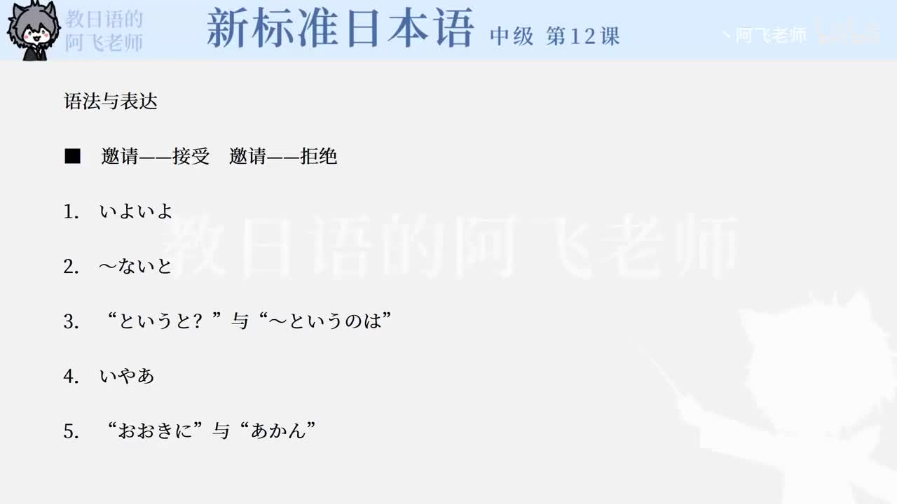

Bilibili P157 · Dialogue
最後の日：离别、拒绝与邀请
王结束大阪采访前与山田告别，谈到大阪方言、婉拒喝酒邀请，又收到婚宴邀请。重点训练礼貌拒绝、解释原因和接受邀请。
全篇听力精讲
按 17 句会话轮播。每句依次播放原句、中文意思、结构、断句、语法和词汇。
这段会话在讲什么
离别确认明天回国、下次取材两周后。
大阪方言期待听到「おおきに」「あかん」，但实际很少听到。
邀请与婉拒山田邀请去ミナミ喝酒，王因明早出发婉拒。
婚宴邀请山田下月结婚，邀请王参加披露宴。
逐句精读
重点语法与会话表达
核心词汇
练习与复习
来源说明：视频标题、时长、CID 和首帧来自 Bilibili 公开视频接口；会话原文来自本地 LearnJapan 课程数据，并修正明显录入错误。